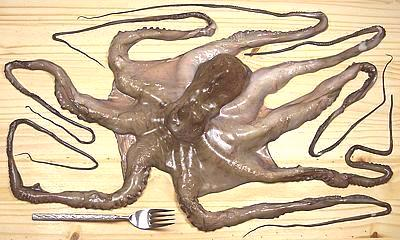

Cooking Large Octopus

Large octopus in Southern California markets range from about 1-1/2 pounds
to 4-1/2 pounds - but when buying remember that it shrinks a great deal when
cooked.
The photo specimen weighted 2.2 pounds at purchase with a tentacle span of
about 59 inches, but by time I finished photographing it so much water had
drained out it was down to 1.8 pounds. It continued to drain overnight in
the fridge and was down to 1.5 pounds in the morning. By time it was
cooked long enough to eat (about 1-1/2 hours) it was down to 10 ounces.
More on Octopus.
Select your octopus for the intended purpose. If you are going to serve
with the skin and sucker disks intact, 3-1/2 pounds is about as large as
you want to go. Larger and you'll have to cook it so long the skin will
be coming off and it'll look ugly.
If you will be rubbing off the skin and disks to get smooth white
cylinders, select an octopus 3 pounds or larger, so the tentacles
are still a reasonable size and you don't have to overcook to get the
disks to rub off.
It is best if your octopus has been frozen which tenderizes it to some
extent. Refreezing won't hurt either,
- Octopus sold in Southern California markets is already cleaned but if
yours isn't, make a cut under the back of the head where it joins the
body and pull out all the innards, turning the head inside out as needed.
Force the beak back from the center of the tentacle star until you can cut
it out and cut out the eyes.
- Bring plenty of water to a boil - it needs to be deep because of the
way the octopus will curl up. In Italy where much octopus is cooked
they put one or two wine corks in the water to help tenderize the beasts.
There's no scientific explanation for this and I know of no rigorous
testing, but I have the corks so I toss 'em in. In other octopus
intensive areas they put in half an onion so I toss that in too.
- Put the octopus in the boiling water and watch it curl up. Bring the
water back to a boil quickly and simmer for as long as it takes. You can test
doneness by inserting the point of a small skewer through the thickest part
of a tentacle. When the point goes through without finding rubbery resistance
at the center it's done. Here's my test results from a 2-1/2 pound octopus.
| Cook Time | Weight |
Condition |
|---|
| As bought | 2-1/2 # | Raw |
| Drained | 2 # (80%) | Raw |
| 10 min | 14 oz | Chewy |
| 20 min | 13 oz | Rubbery |
| 45 min | 13 oz | Very chewy |
| 1 hr | 13 oz | Less chewy |
| 1-1/4 hr | 13 oz | Just edible |
| 1-1/2 hr | 13 oz (33%) | Tender enough, good flavor - skin still intact but delicate. |
| 1-3/4 hr | 13 oz | Tender, flavor still OK - skin wipes off, suckers with more difficulty |
| 2 hr | 9 oz (23%) | Tender, flavor starting to decline - skin and suckers rub off easily |
- If you cook to the "Tender enough" point, leaving the skin and sucker
disks on (my recommendation), the skin will become firmer and adhere better
when the tentacles have cooled. Octopus gets a bit stiff and has less flavor
when chilled so you always want to bring it to room temperature for
serving.
sf_octolgz 061208 - www.clovegarden.com
©Andrew Grygus - agryg@clovegarden.com - Photos
on this page not otherwise credited © cg1
- Linking to and non-commercial use of this page permitted